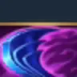
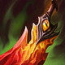
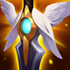
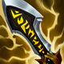

核心裝備
 殞落王者之劍
殞落王者之劍攻速、吸血與百分比傷害適合持續普攻。

智慧末刃兼顧攻速、附傷與魔抗。

死亡之舞降低物理爆發並提高長團容錯。
 史特拉克手套
史特拉克手套深入敵陣時提供關鍵護盾與生命。

守護天使後期深度進場提供一次復活保險。
Warwick · 低血追獵／壓制強開型吸血鬥士
不要只因聞到低血就穿過整隊。大絕最好接既有控制或封住核心；一技按住可跟隨位移，用來黏住閃現或位移目標。
本站評級理由：沃維克在 ARAM 有 120% 治療與 80% 承傷，正面長團容錯非常高；低血敵人又提供追擊速度，大絕能直接壓制核心。
6.3d：沃維克治療 115%→120%、承傷 85%→80%；7.2 大絕套用 Knockdown 規則。
攻速、吸血與百分比傷害適合持續普攻。

兼顧攻速、附傷與魔抗。

降低物理爆發並提高長團容錯。
深入敵陣時提供關鍵護盾與生命。

後期深度進場提供一次復活保險。

攻速提高普攻與技能循環。
控制與魔法傷害多時優先。

強化這套 ARAM 打法的核心節奏。
強化這套 ARAM 打法的核心節奏。
強化這套 ARAM 打法的核心節奏。
強化這套 ARAM 打法的核心節奏。

強化這套 ARAM 打法的核心節奏。

補進場角度與逃生。

長團維持貼身與追擊。
1 技 > 3 技 > 2 技
主 1 強化核心傷害與治療，次 3 提高減傷與恐懼頻率；大絕能點就點。
先打前排回血，三技先開減傷後延遲恐懼反打。
敵方半血以下時利用追獵找角度，大絕盡量接隊友控制。
重創存在時別高估回血；先讓前排吃控制，再用大絕壓制核心。

致死宣告穿透與重創處理高回復前排。
大量法術傷害時補魔抗與移速。
 黑色切割者
黑色切割者持續攻擊快速疊減甲，生命與技能加速適合鬥士。
看遊戲卡片下方分類 → 點相同分類 → 看左側 S+／S／A。
高攻速普攻與一技能回血構成主要續戰，命中特效可以穩定觸發。
追獵低血目標就是沃維克的核心機制，額外跑速能直接提高黏人與轉火。
一技能回血、三技能恐懼與大絕壓制都高度依賴技能循環。
三技能恐懼與大絕壓制都是可靠限制，控制增幅能提高切核心成功率。
低生命時提高攻擊、雙防與吸血，和沃維克低血反打完全同方向。
普攻縮技能、處刑與施放大絕保命類單卡都很適合追獵收割。
v80.16.0 ARAM A 第七批：套用 120% 治療／80% 承傷；同步 7.2 大絕 Knockdown。
ARAM 使用獨立於召喚峽谷的資料集；本站會把官方模式平衡、單線 5v5 特性與出裝／符文適配分開判斷，而不是直接複製峽谷配置。